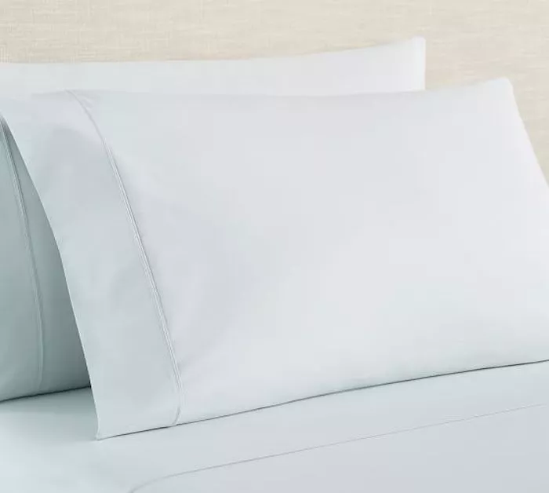
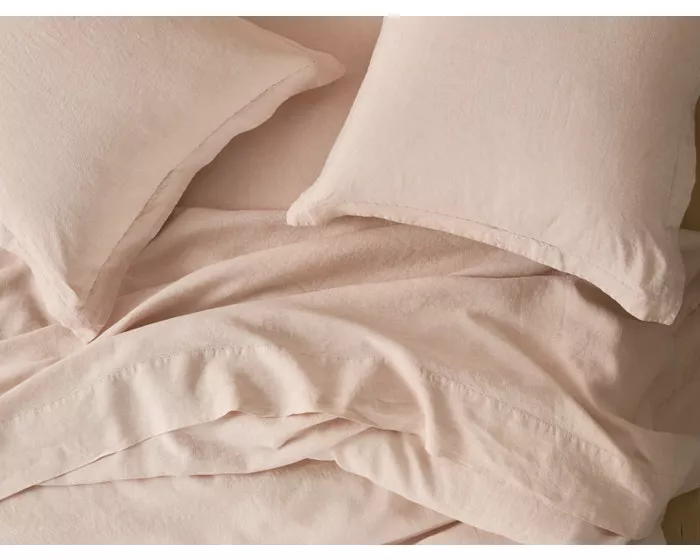
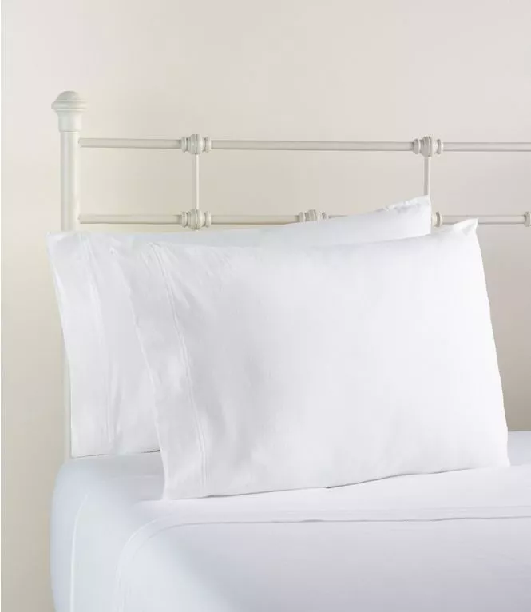

The 9 Best Organic Bedsheets in 2019
100% Raw Organic Cotton Bedsheets
Best Overall: Magnolia Organics Dream Collection Sheet Set
 Some of the best organic sheets you can buy are the
Magnolia Organics Dream Collection Sheet Set.
These highly-rated linens are made from Global
Organic Textile Standard–certified organic cotton
(also called GOTS), which is grown without the use
of pesticides or herbicides, and they’re manufactured
according to Fair Trade standards, as well. The fabric
has a smooth, silky sateen construction with a 300
thread count, making them luxurious and soft to
sleep in every night..
Some of the best organic sheets you can buy are the
Magnolia Organics Dream Collection Sheet Set.
These highly-rated linens are made from Global
Organic Textile Standard–certified organic cotton
(also called GOTS), which is grown without the use
of pesticides or herbicides, and they’re manufactured
according to Fair Trade standards, as well. The fabric
has a smooth, silky sateen construction with a 300
thread count, making them luxurious and soft to
sleep in every night..
Runner-Up, Best Overall: PB Classic 400-Thread-Count Organic Percale Sheet Set

While a bit more expensive,
you also can’t go wrong with the PB Classic Organic
Percale Sheet Set, which delivers a luxurious
sleep experience. These sheets are made from 100
percent GOTS-certified organic cotton, and the
fabric is a crisp percale weave with a 400 thread
count.
Best Budget: Threshold Organic Cotton Printed Sheet Set
 Organic cotton sheets can be quite expensive,
but you don’t have to break the bank to get a set of high-quality
organic linens. The Threshold Organic Cotton Printed Sheet Set is both
affordable and well-made, and you can feel good about sleeping on the Oeko-Tex
and GOTS-certified fabrics.
Organic cotton sheets can be quite expensive,
but you don’t have to break the bank to get a set of high-quality
organic linens. The Threshold Organic Cotton Printed Sheet Set is both
affordable and well-made, and you can feel good about sleeping on the Oeko-Tex
and GOTS-certified fabrics.
Best Linen: Coyuchi Organic Linen Chambray Sheets

Linen sheets are known to be luxurious, super soft,
and incredibly durable, which is why you can’t go wrong with the Coyuchi Organic
Linen Chambray Sheets. These high-end bed coverings are made from French flax that
has been organically grown and processed using water-saving manufacturing methods, and
the fibers are GOTS-certified. They’re even dyed with low-impact dyes that are better
for the planet and gentle on sensitive skin.
Best Flannel: L.L. Bean Organic Flannel Sheet Collection

Linen sheets are known to be luxurious, super soft,
and incredibly durable, which is why you can’t go wrong with the Coyuchi Organic
Linen Chambray Sheets. These high-end bed coverings are made from French flax that
has been organically grown and processed using water-saving manufacturing methods, and
the fibers are GOTS-certified. They’re even dyed with low-impact dyes that are better
for the planet and gentle on sensitive skin.